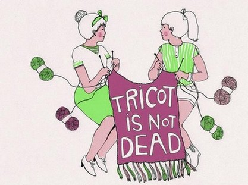

Vous avez envie de tricoter dans la bonne humeur et de participer à des projets collectifs ? Rejoignez le Gang des Tricoteuses !Le Gang des Tricoteuses sévit chaque mardi après-midi à la Manufacture : autour d'un café et de petits gâteaux, armées de leurs aiguilles, elles tricotent en papotant (ou l'inverse). Débutante en tricot ou pro des aiguilles, venez vous initier, échanger des astuces et participer aux grands projets collectifs artistiques du Gang ! Tous les mardis !.